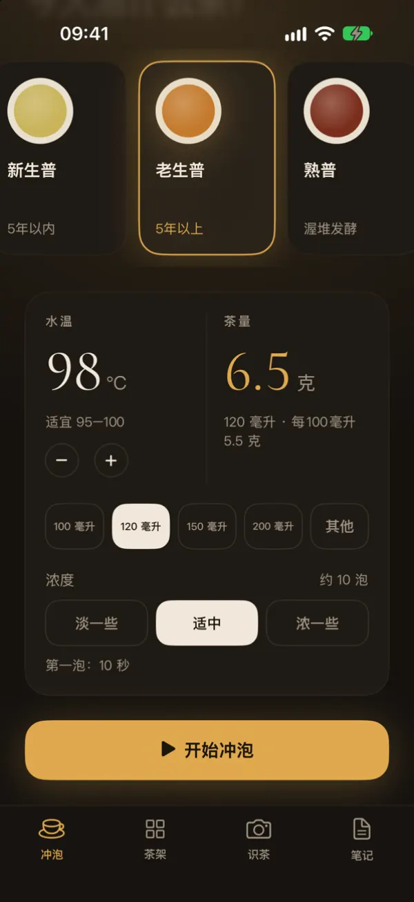
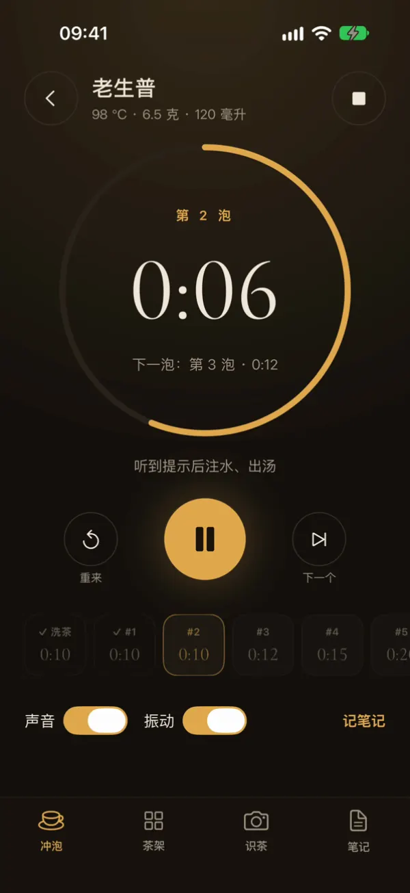
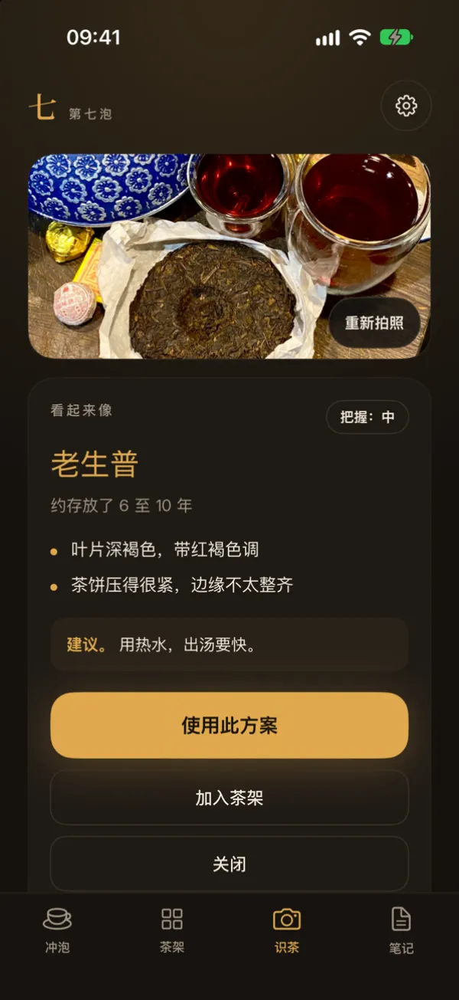
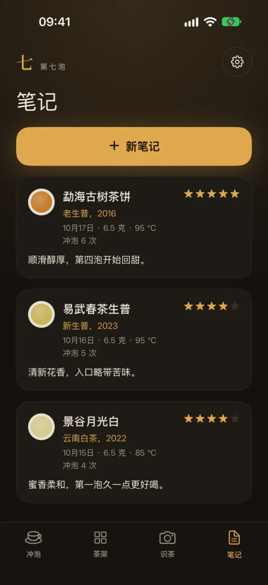

投茶量与水温
选择茶和茶具，应用会算出投茶克数，并显示合适的水温。
功夫茶计时器
第七泡会根据你的茶和茶具算出投茶量和水温，再为洗茶和每一泡计时。
免费使用。可选 Plus，获取更多拍照识别次数。
部分国家和地区的 App Store 尚未上架本应用。

功能
为夜间泡茶而设计：深色界面，大号数字，没有多余干扰。

选择茶和茶具，应用会算出投茶克数，并显示合适的水温。
圆环计时器依次为洗茶和每一泡计时。铃声和震动提醒你出汤。

拍摄一至三张茶叶或包装的照片。结果仅为估计，并非保证。

用茶架整理你的茶，记录每一次冲泡。茶架和笔记保存在你的手机上。
左右滑动，查看更多界面。
五种茶
应用从这些参数开始。水温、茶具和浓度都可以调整。点按带有指南的茶，可查看详细说明。
计时器、茶架和笔记均免费。每月提供一定次数的免费拍照识别。
可选订阅，提供更多拍照识别次数。购买前，应用内会显示价格和次数上限。
无需账号，没有广告，不做追踪。只有在你同意后，照片才会发送至人工智能服务。 隐私政策.
支持简体中文、繁体中文、英语和乌克兰语。